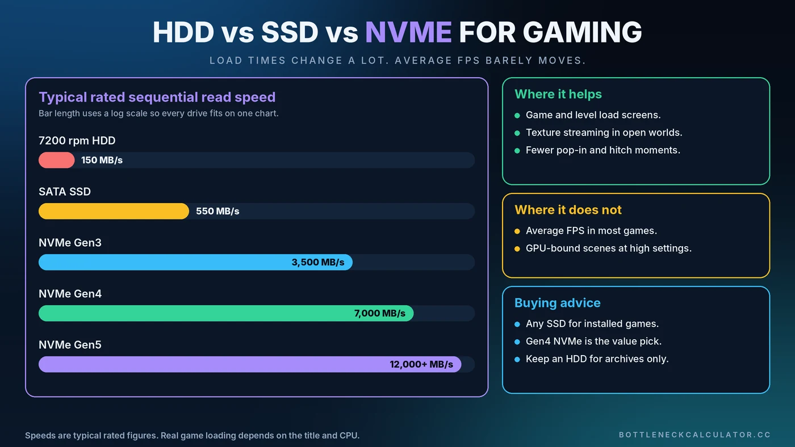

SSD vs HDD vs NVMe for Gaming: Does Storage Cause a Bottleneck?
A new SSD will not add FPS in most games, yet people swear it makes games feel better. Both things are true. Storage changes how fast a game loads and how smoothly it streams in new assets, not how quickly your graphics card draws frames.

Short Answer: Is Storage a Gaming Bottleneck?
The jump from a hard drive (HDD) to any SSD is large and noticeable in load times and streaming. The jump from a SATA SSD to NVMe is much smaller in real games. And in almost every case, average FPS barely changes because frame rate depends on your CPU and GPU, not your drive.
What Storage Actually Does During a Game
Imagine your RAM as the desk you are working at and your storage as the library down the hall. The game keeps what it needs right now on the desk, and fetches everything else from the library. A faster library means shorter trips.
Storage handles several jobs while you play:
- Loading the game and each level or save
- Streaming textures and world data as you move through large maps
- Reading and writing shader caches
- Acting as backup memory through the Windows pagefile when RAM runs out
HDD vs SATA SSD vs NVMe
Hard Disk Drive (HDD)
A typical 7200 rpm hard drive reads at roughly 100 to 200 MB/s and is especially slow at the many small reads games make. It is cheap for bulk storage, but it is the slowest option for running modern games.
SATA SSD
A SATA SSD tops out around 550 MB/s because of the SATA connection, and it responds far faster than a hard drive. For most players, it is the biggest single upgrade for load times and streaming.
NVMe SSD
NVMe drives connect over PCI Express. Typical rated sequential reads are around 3,500 MB/s for Gen3, 7,000 MB/s for Gen4 and 10,000 MB/s or more for Gen5. Those numbers are impressive, but game loading also depends on small random reads and CPU decompression, so real gains are far smaller than the headline speed.
Can Storage Cause Stuttering?
Yes, mainly with a hard drive. In large open-world games, a slow drive can cause textures to pop in late, hitches while the game streams new areas and very long load screens. Some modern games now list an SSD as a requirement.
Storage also matters when memory runs short. If your RAM fills up, Windows pushes data to the pagefile on your drive, and a slow drive turns that into obvious stutter. See our guide on whether 16GB of RAM is enough, and learn more about frame pacing in fixing stuttering and 1% lows.
Do You Need NVMe for Gaming?
For most people, no. A quality SATA SSD is a big step up from a hard drive, and a Gen4 NVMe drive is a good value pick if you are buying now. Gen5 drives run hotter, usually need a heatsink and offer little extra for games today.
What About DirectStorage?
DirectStorage is a Microsoft technology that lets compatible games load assets with less CPU overhead, sometimes using the GPU for decompression. Support is still limited, and the benefit depends on the game. Do not buy a drive just for DirectStorage.
How to Check If Storage Is Slowing You Down
- Open Task Manager and go to Performance, then Disk. Watch active time and response time during a stutter. Active time pinned near 100% is a clue.
- Time your load screens with a stopwatch, then move the same game to a different drive and compare.
- Benchmark the drive with a tool such as CrystalDiskMark to confirm it reaches its rated speed.
- Check the M.2 slot. Some slots run at lower speeds than the drive supports, so consult your motherboard manual.
- Rule out other causes using our guide to checking PC usage.
How to Get the Most From Your SSD
- Install your most demanding games on your fastest drive
- Leave some free space, since a nearly full SSD can slow down
- Keep motherboard chipset drivers and drive firmware up to date
- Use the motherboard heatsink or a drive heatsink for fast NVMe models
- Store large archives and old games on a cheap hard drive instead
How Much Storage Do You Need?
Many large modern games take well over 100GB each, so a 1TB drive fills up quickly. If you can, plan for 1TB at a minimum, and consider 2TB if you keep several big titles installed. Our PC upgrade checklist helps you decide where storage fits among your other upgrades.
Where Storage Fits in the Bottleneck Picture
A bottleneck calculator compares your CPU and GPU, so it will not flag a slow drive. If your games stutter or load slowly while your bottleneck percentage looks healthy, storage is worth checking. For frame-rate limits, see the CPU vs GPU bottleneck guide.
Conclusion
Buy storage for load times and smooth streaming, not for FPS. Move off a hard drive first. After that, a SATA or Gen4 NVMe drive is plenty for gaming, and spending more on speed will rarely change what you see on screen. For the parts that decide frame rate, check your balance with the free Bottleneck Calculator.
Frequently Asked Questions
Does an SSD increase FPS?
In most games, no. An SSD improves loading times and asset streaming, but frame rate is set mainly by your CPU and GPU. You may see smoother performance in large open-world games that stream data constantly.
Is NVMe worth it over a SATA SSD for gaming?
For most players the real-world difference is small, usually a few seconds in load times. A Gen4 NVMe drive is a good value if you are buying new, but a SATA SSD is still a very good gaming drive.
Can I still play modern games on an HDD?
Many games run, but you may see long loads, texture pop-in and stutter in open-world titles. Some newer games require an SSD, so use a hard drive for storage and an SSD for the games you play most.
Does storage cause stuttering in games?
It can. A slow hard drive struggles with streaming, and a slow drive makes things worse when RAM runs out and Windows uses the pagefile.
Is 1TB enough for a gaming PC?
It is a reasonable minimum, but many large games exceed 100GB. If you keep several big titles installed, 2TB gives you more comfortable room.